10. Peces esfèriques¶
En aquest tutorial aprendrem a utilitzar altres peces sòlides, les esferes ** **.
; BR |
Obrim l’aplicació ** Freecad ** i fem clic a la icona per crear un document ** nou ** | Icon-new-Document |.
Seleccionem la part del banc de treball ** ** per començar a dissenyar objectes en tres dimensions.
; BR |
En aquest moment afegirem els eixos de referència ** ** per ajudar -nos a situar les peces correctament.
A la `` vegeu ... activeu o desactiveu la creu dels eixos.

; BR |
Ara ** Creem una esfera ** fent clic a la tercera icona de la barra d'objectes sòlids.

Seleccionem per veure la peça a la vista isomètrica.

La peça es veurà com a la imatge següent.
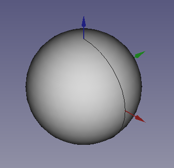
; BR |
Un cop creada l’esfera, canviarem l’edició de la mida a la pestanya Dades El radi ** (radi) ** de manera que sigui de la mida d’un marbre.
** Ràdio (radi) ** = 5 mm
Amb l’ajuda d’aquesta esfera, crearem un Portacanicas.
; BR |
Nota
Per actualitzar la imatge de la peça a la pantalla, premem la tecla de funció `` `` a la ' editar ... actualitzar' `.
; BR |
Copiem i enganxem l’esfera vuit vegades més. A continuació, mourem les esferes per formar una matriu de 3 x 3 esferes com a la vista de la planta de la figura següent.
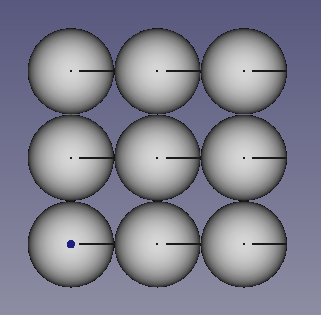
; BR |
Un cop transferides les esferes, ens unirem a totes les esferes en un sol objecte per poder -lo moure fàcilment.
Seleccionem totes les esferes i feu clic a la icona de peces de peces:
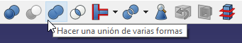
; BR |
Seleccionem la ** fusió ** de peces i escollim la vista a ** elevat **. Menú `` Veure ... Vistes estàndard ... Raised ''
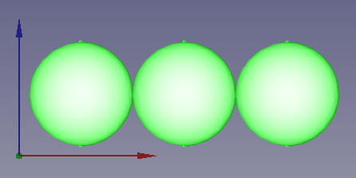
Ara traslladem el conjunt d’esferes a la nova posició
x = 6 mm
y = 6 mm
Z = 6 mm
de manera que es troben a la figura.
; BR |
A continuació, creem un cub i li donem les dimensions següents.
** Longitud (Lenght) ** = 32 mm
** Amplada (amplada) ** = 32 mm
** Alçada (alçada) ** = 6 mm
A la vista isomètrica es veurà.
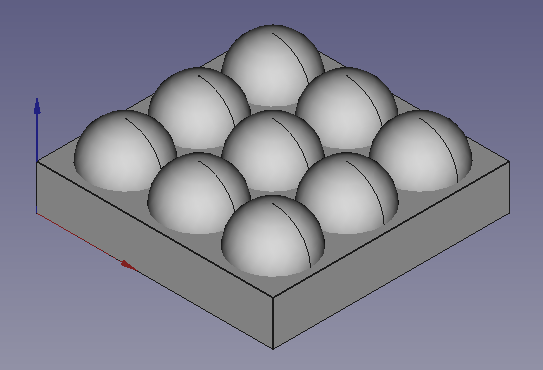
; BR |
Finalment, només haurem de seleccionar el ** cub **, mantenint la tecla ** control ** Seleccionem la ** fusió ** de les esferes i feu clic a la icona de la diferència de parts.
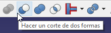
Amb el que obtindrem els nostres operadors acabats.
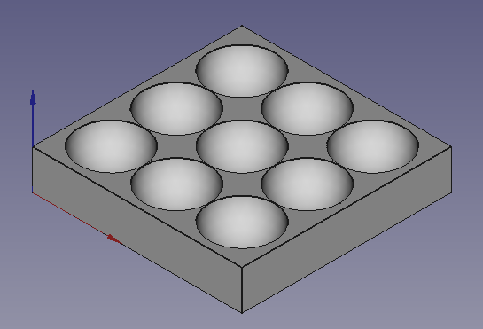
; BR |
Exercicis¶
Creeu un cub amb una esfera atrapada a l'interior com la que es pot veure a la figura següent.
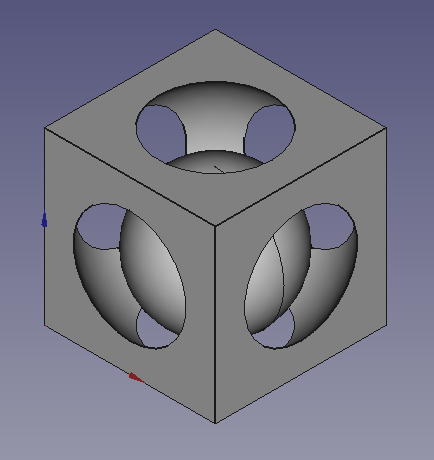
Les dimensions del cub seran les de 30 mm quadrades
Les dimensions del forat interior (una esfera) seran de 18 mil·límetres de ràdio i l'esfera haurà de ser transferida al centre de la plaça.
x = 15 mm
y = 15 mm
Z = 15 mm
Finalment, la petita esfera interior tindrà un radi de 12 mil·límetres i haurà de ser transferida a la següent posició.
x = 15 mm
y = 15 mm
Z = 12 mm
; BR |
Creeu una pestanya Domino com la figura.
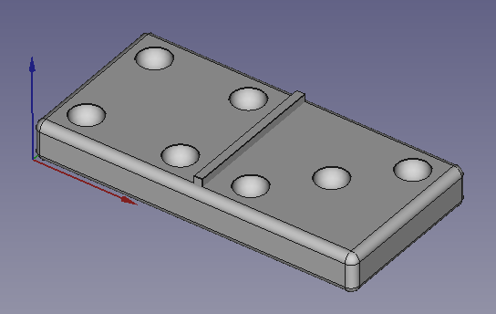
La base inferior es crearà a partir d’un cub al qual donarem les dimensions següents.
** Longitud (Lenght) ** = 41 mm
** Amplada (amplada) ** = 20 mm
** Alçada (alçada) ** = 5 mm
Més tard, alimentarem tots els seus costats amb un radi d’1 mil·límetre.
El full de separació del medi serà un altre cub, al qual donarem les dimensions següents.
** Longitud (Lenght) ** = 1 mm
** Amplada (amplada) ** = 18 mm
** Alçada (alçada) ** = 6 mm
Posteriorment el traslladarem a la seva posició al centre de la base.
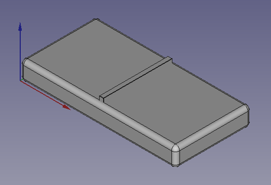
A continuació, crearem 1 esfera amb un radi de 2 mil·límetres i el transferirem a una alçada ** Z ** de 5 mm.
Doblarem l’esfera 6 vegades amb l’edició `` editar ... duplicar la selecció i transferirem les esferes a les posicions ** x ** e ** i ** que es poden veure a la figura següent.
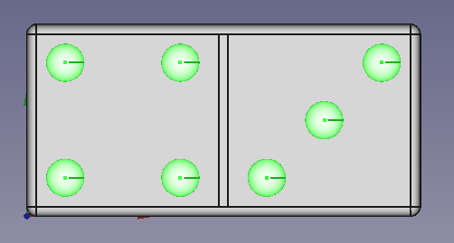
Finalment, unirem totes les esferes en un sol objecte i restarem la fusió de totes les esferes de la peça inferior.
; BR |
Videotuitorial¶
Vídeo: Amb un parell d'esferes